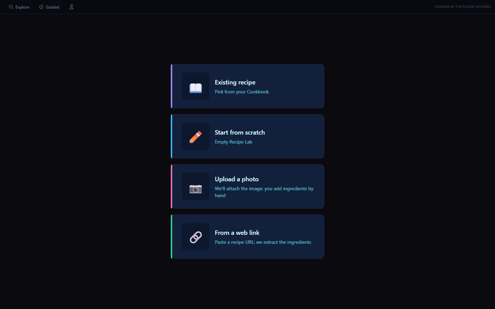
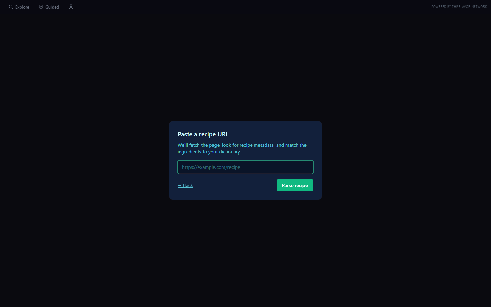
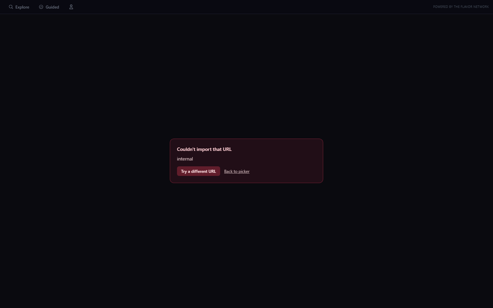

4. Detail (scrolled list if preview; static otherwise)

5 commits + Cloud Function deploy 2026-05-30. Test URL: https://www.seriouseats.com/the-best-pasta-pomodoro-recipe.
Note: parse success requires sign-in (the scrapeRecipe function rejects unauthenticated calls). When unauthed, frame 3/4 show the friendly error state — which itself proves the function call is reaching the Cloud Function and getting a clean rejection.


